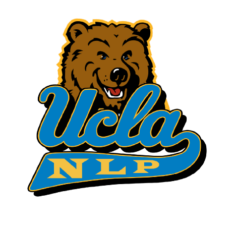
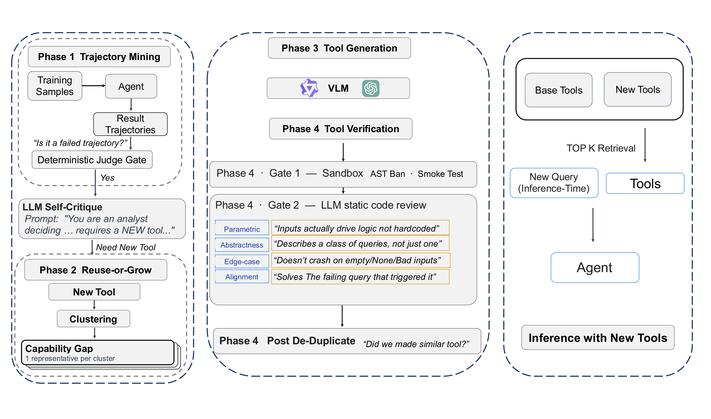

ToolSmith
An Automatic Tool-Generation Framework for Multimodal Search Agents

♠University of California, Los Angeles ♣AWS GenAI†Equal advising
Abstract
Recent multimodal search agents use reasoning, vision, and live web search across many turns to answer questions beyond parametric knowledge by orchestrating a small library of hand-crafted search and visual tools. However, the library is laborious to create and maintain, and frozen when new query types, evidence formats, and failure modes are encountered in the wild. Human practitioners, by contrast, cope with insufficient tools by fashioning new ones from familiar parts and reusing them across tasks. Inspired by this, we propose ToolSmith, an automatic tool-generation framework that grows and reuses modules on top of a lean base tool library. We evaluate ToolSmith on three in-domain multimodal search benchmarks and ten out-of-domain benchmarks under a VLM-as-a-Judge protocol. ToolSmith consistently improves over the base library across deployed agents of varying scales, with larger backbones reaping greater gains, demonstrating the scalability of the approach. Our code and data will be publicly available.
Generated Tools Lift Every Backbone
A Four-Phase Forge
ToolSmith runs a four-phase pipeline on top of an eight-primitive base library, then routes the new tools to the agent at inference. Click a phase, or let it play.
Show the full framework figure

Consistent Gains over a Strong Base-Tool Agent
Across 3 in-domain and 10 out-of-domain benchmarks, tools generated by ToolSmith (GPT-5 generator) consistently improve over an already strong base-tool agent.
| Inference model | In-domain avg | Out-of-domain avg |
|---|---|---|
| Qwen3-VL-8B | 47.94→50.14+2.20 | 26.57→27.90+1.33 |
| Qwen3-VL-32B | 55.47→57.14+1.67 | 31.27→34.25+2.98 |
| GPT-5 | 51.80→52.84+1.04 | 39.80→42.20+2.40 |
Each cell: base tools → base tools + ToolSmith. Gains appear in 36 of 39 backbone × benchmark cells.
Strongest generator wins
The tool-generation model should be as strong as possible.
Mine with the deployed model
The trajectory-mining model should match the inference model.
Quality vs. coverage
A cluster-count sweep exposes a quality–coverage trade-off.
Generated Tools in Action
Each case pairs a base-tool failure with the ToolSmith run on the same question. Click the figure to enlarge it.
About the Logo
The ToolSmith logo takes its colors from UCLA: the blue and gold are UCLA's official colors. Its style draws on the ukiyo‑e woodblock prints of Katsushika Hokusai, which inspired the flowing golden lines that run across the hammer.
BibTeX
@inproceedings{sun-etal-2026-toolsmith,
title = "{T}ool{S}mith: An Automatic Tool-Generation Framework for Multimodal Search Agents",
author = "Sun, Rui and
Huang, Junhua and
Zancato, Luca and
Islam, Md Mofijul and
Chang, Kai-Wei",
booktitle = "Findings of the {A}ssociation for {C}omputational {L}inguistics: {EMNLP} 2026",
month = oct,
year = "2026",
address = "Budapest, Hungary",
publisher = "Association for Computational Linguistics",
url = "https://aclanthology.org/2026.findings-emnlp.1699/",
doi = "10.18653/2026.findings-emnlp.1699",
pages = "36305--36324"
}